Fonds travaillés ou aplats unis : ce que font vraiment les apps, et ce que Kidsono devrait faire
La réponse
Quatre verdicts d'abord. Les écrans qui les fondent suivent, classés par type de traitement de fond. La règle de fond n'est pas isolée : elle suit la courbe de densité de la séquence d'ouverture (minimal au splash, pic au claim, retour au neutre ensuite).
1 · Est-ce fréquent d'utiliser des fonds travaillés ?
Observé Sur le panel lu, la majorité des écrans restent en aplat ou quasi-aplat. Mais presque chaque app pose un ou deux fonds travaillés à un moment fort, jamais partout. Aumio sort un dégradé bleu/violet avec halo au claim et un fond illustré (fusée, étoiles) au paywall, puis revient au neutre pour les questions. Lóvi pose un gradient lilas avec blobs lumineux sur les 2 premiers écrans, puis bascule sur du blanc clinique. Moshi ouvre sur un dégradé turquoise texturé, Readmio sur un paysage illustré. Le fond travaillé sert à marquer un écran émotionnel (l'entrée, la vente), pas à habiller toute l'app.
Solide L'aplat domine quand l'écran fait travailler ou décider. Tous les paywalls "premium sobres" lus sont sur fond clair quasi-uni : Storytel (off-white), Epic (blanc), Lingokids (blanc), Pinkfong (blanc), Cosmic Kids (bleu très pâle quasi-aplat). Idem pour les écrans de compte, de questions, de formulaires : Noom, Lifesum, Headspace, Lóvi redescendent tous au blanc ou au crème dès qu'il faut lire un prix ou remplir un champ.
2 · Sur quels types d'écrans le fond travaillé apparaît-il ?
- Claim / welcome : c'est l'écran qui concentre le plus de fonds travaillés (le pic émotionnel). Aumio (dégradé + halo), Moshi (turquoise texturé), Lóvi (gradient + blobs), Headspace (aplat jaune saturé + collage d'illustrations), Lifesum (photo lifestyle pleine page).
- Splash : souvent un dégradé léger plutôt qu'un vrai aplat. Lifesum (vert sapin dégradé), Lóvi (gradient lilas), Flo (gradient rose). Mais beaucoup restent sur aplat franc (Noom, Headspace, Homer).
- Écrans de valeur / carrousel : moitié aplat + illustration (Epic bleu uni, Pickatale jaune uni), moitié travaillé (Readmio paysage, Vooks fond catalogue, Mangas.io rayons de lumière, Super Simple Songs confettis).
- Hero de paywall : quand le paywall a un visuel en haut, ce visuel est souvent un fond illustré (Moshi montagnes, Readmio paysage), mais la zone des prix reste sur fond clair.
- Solide Là où PERSONNE ne met de fond travaillé : grille de prix, formulaire de compte, questions d'onboarding, SSO. C'est une absence nette et unanime.
3 · Quels types de traitement dominent ?
Observé Par fréquence décroissante sur le panel : 1/ dégradé riche (Aumio, Lóvi, Moshi, Mangas.io, Flo) ; 2/ illustration de fond pleine page (Headspace en collage, Readmio en paysage, Storytel/Alma en mosaïque de couvertures, Vooks en catalogue) ; 3/ halo/glow (presque toujours combiné à un dégradé, jamais seul : Aumio, Lóvi, ahead) ; 4/ blobs / formes organiques et couches superposées (Lóvi, Breeze avec ses nuages, ahead) ; 5/ motif répété (rare et léger : les fleurs éparses de Flo, le confetti de Super Simple Songs, la grille en filigrane de Lingokids).
Solide Deux absences franches. Le grain / texture papier n'apparaît nulle part dans le panel lu (les fonds sont propres et lisses, pas granuleux). Et le dégradé mou délavé (deux pastels proches sans accent) n'est pas une recette gagnante : quand il apparaît chez les perdants (Kidjo, fond violet terne), il rend l'écran sale et illisible, jamais premium.
4 · Kidsono doit-il y aller, et sur quels écrans ?
Estim. Kidsono doit faire exactement ce que fait le panel : un fond travaillé pour le claim (le pic), un éventuel hero illustré en haut du paywall, et de l'aplat crème partout ailleurs (splash sobre, carrousel A/B/C, grille de prix, formulaires). Le piège pour une marque néo-brutaliste n'est PAS le manque de fond travaillé : c'est le dégradé mou, qui contredit frontalement les contours noirs épais et les ombres franches. Si Kidsono enrichit un fond, ce doit être par des moyens compatibles avec le néo-brutalisme : formes géométriques cernées de noir, motif de pastilles/confettis aux accents crayon, halo coloré franc, jamais un dégradé délavé.
Les exemples, par type de traitement de fond
Chaque card est annotée : ce que je repère vraiment sur la capture (type de fond classé à l'œil) + l'intérêt pour Kidsono. Les apps de la famille des perdants ne figurent qu'en contre-exemples, signalés.
Le traitement le plus fréquent au claim et au splash
Un dégradé de deux à trois tons d'une même famille, avec parfois un halo lumineux derrière l'élément central. Réservé aux écrans émotionnels, pas aux écrans de décision.
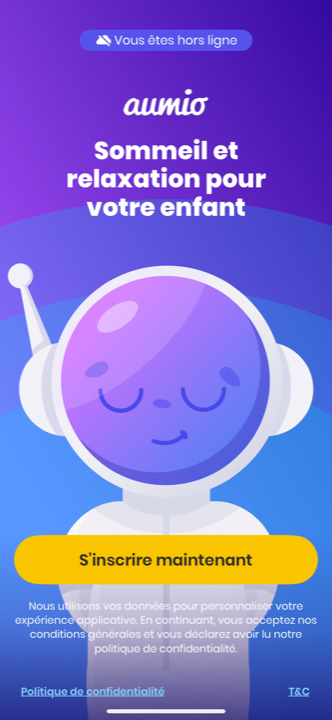
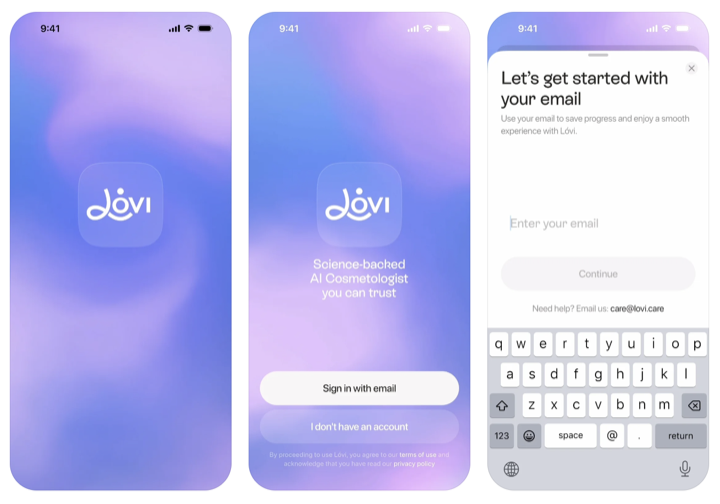
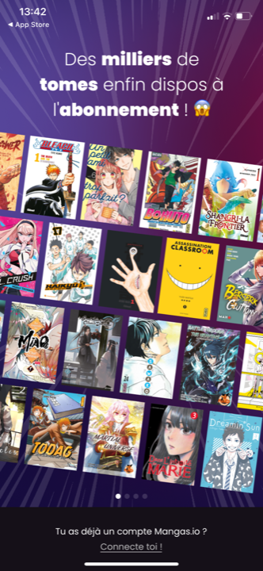
Le fond EST une scène ou un catalogue
Deux familles : une illustration de décor (paysage, collage) qui pose l'univers, ou une mosaïque de couvertures qui prouve le catalogue. Toujours sur l'écran d'entrée ou le hero, jamais sur la zone de décision.
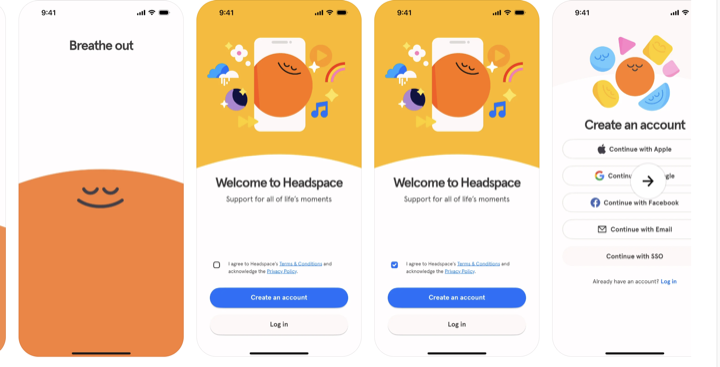
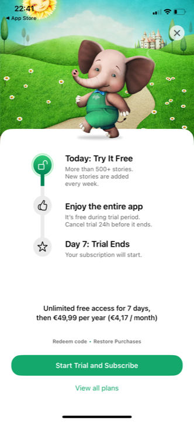
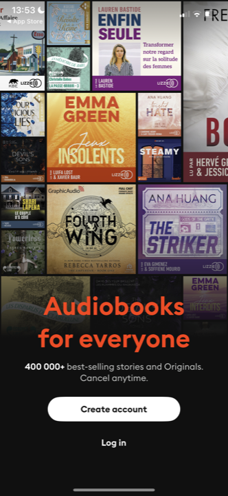
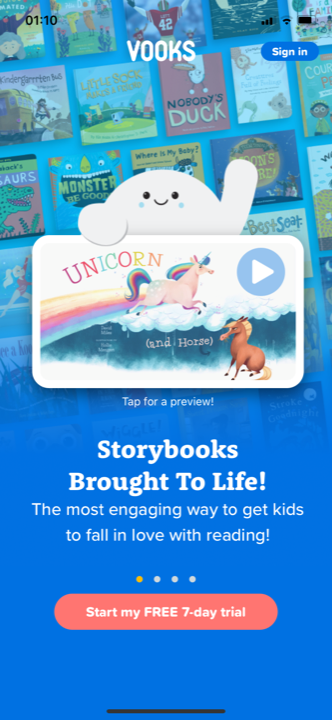
Le compromis le plus compatible néo-brutaliste
Pas de dégradé : un aplat de couleur vive, et la richesse vient des formes géométriques, des blobs cernés ou de l'illustration posée dessus. C'est la voie la plus proche de la DA Kidsono.


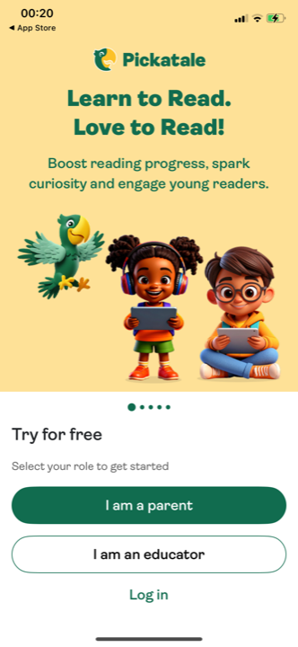
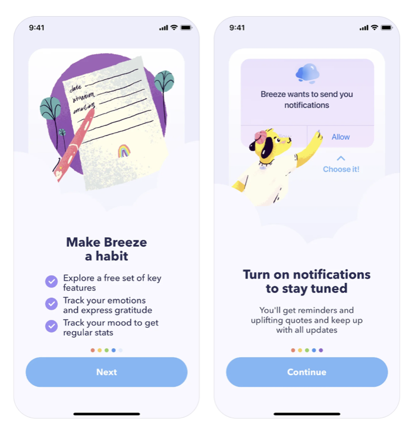
Quand le fond clair reste presque nu, juste ponctué
Un fond clair quasi-uni, animé par un motif épars (fleurs, étoiles) ou un simple halo de couleur derrière un élément. Très utilisé sur les écrans d'autorité et de preuve, qui doivent rester lisibles.
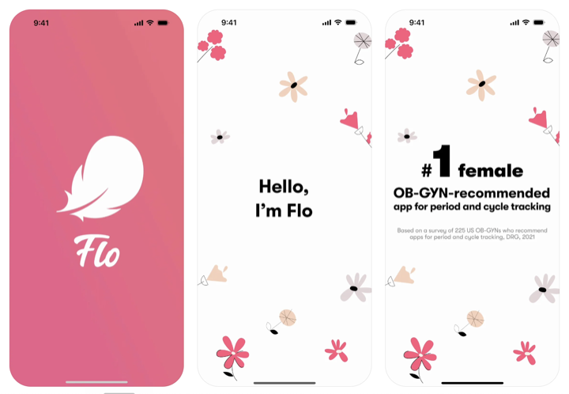
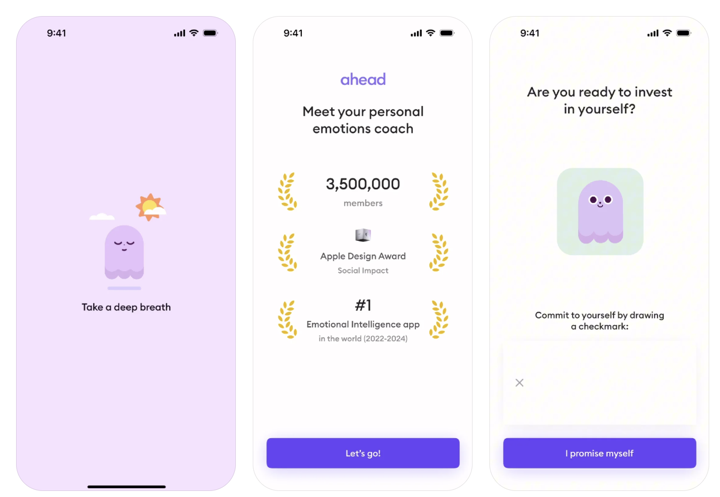
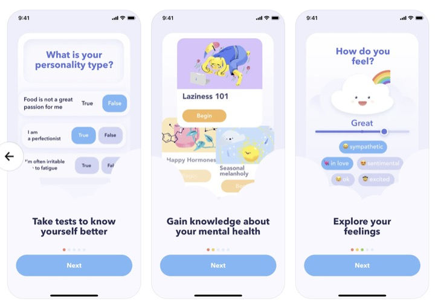
Là où le fond travaillé disparaît systématiquement
Paywalls premium, formulaires, comptes : fond clair quasi-uni, couleur réduite à l'accent du CTA. Unanime, y compris chez les apps qui travaillent leurs autres fonds.


Quand "travaillé" veut juste dire crème chaud et constant
Le cas Noom : pas d'effet, mais un fond crème tenu de bout en bout, qui fait office d'univers. Une leçon directe pour Kidsono dont le fond de marque est déjà un crème.
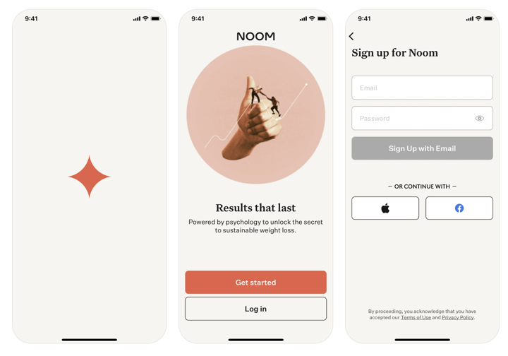

Quand le fond travaillé tourne au sale
Famille des perdants, citée uniquement pour montrer ce qui rate. Le dégradé mou et l'aplat saturé chargé sont les deux pièges.
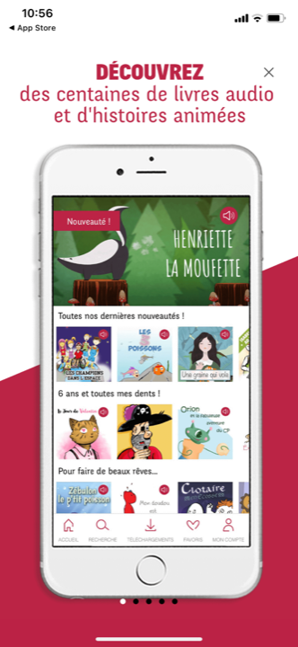
Ce que ça donne pour Kidsono
Sur quels écrans enrichir le fond, et lesquels garder en aplat crème
- Splash : aplat crème (ou aplat jaune franc), ourson centré, beaucoup de vide. C'est l'écran le plus dépouillé, on ne le travaille pas. Au mieux, un halo jaune franc derrière l'ourson, jamais un dégradé.
- Claim (le pic, à enrichir) : le seul écran où un fond travaillé est clairement justifié. Voie compatible néo-brutaliste : aplat franc (jaune ou crème) + un décor posé dessus façon Headspace, à savoir des formes géométriques cernées de noir et un confetti aux accents crayon (rose, vert, bleu, corail), plus l'ourson en couleur pleine. Le flux rupture déjà acté (haut jaune deux-zones) est le bon véhicule. Surtout pas de dégradé lilas façon Lóvi.
- Carrousel A / B / C : aplat crème tenu, richesse portée par les illustrations et les blocs cernés (la bande de couvertures sur A, la frontière sur B, les avatars sur C), pas par le fond. Cohérent avec la courbe de densité qui redescend après le claim.
- Écran D autorité : aplat crème obligatoire. Flo et ahead le prouvent : l'écran de preuve reste sur fond clair pour que les logos et la caution se lisent. Au mieux, un motif de pastilles très discret, jamais un fond chargé.
- Paywall : deux zones. Un hero en haut peut être enrichi (un aplat jaune franc avec l'ourson, ou un bandeau de couvertures façon Lingokids), mais la grille de prix et le quota d'heures restent sur crème uni (modèle Storytel). C'est non négociable : sur l'écran qui vend, le fond travaillé nuit à la lecture (contre-exemple Kidjo).
- Formulaires, compte, code parental : aplat crème ou blanc, accent réduit au CTA jaune. Personne dans le panel ne travaille ces fonds.
Comment enrichir sans tomber dans le dégradé mou : remplacer chaque réflexe "dégradé" par un moyen néo-brutaliste. Au lieu d'un dégradé de fond, un aplat franc. Au lieu d'un blob flou, une forme géométrique cernée de noir. Au lieu d'un glow diffus, un halo de couleur franc ou un motif de confettis/pastilles aux accents crayon. Au lieu d'une texture grain (absente du panel de toute façon), rien. La richesse vient des contours, des ombres décalées et des accents crayon, pas d'un fondu de couleurs.
L'avis
Force : la reco s'aligne sur un pattern convergent et observé écran par écran sur cinq apps top-tier indépendantes plus le corpus enfant : fond travaillé ciblé sur le claim et le hero, aplat partout où l'on décide. Elle ne demande pas à Kidsono d'inventer, juste d'appliquer le standard à sa propre grammaire. Le contre-exemple Kidjo (fond riche sur le paywall = illisible) valide par l'absurde la règle "aplat sur la zone de prix". Observé
Risques : le panel top-tier penche wellness, où le fond travaillé typique est le dégradé doux, justement ce qui jure avec le néo-brutalisme. Transposer "fond travaillé" en langage Kidsono (formes cernées, confettis, aplats francs) est une traduction, pas une copie : si l'exécution glisse vers le dégradé pour faire "premium", on perd la DA. Par ailleurs, la frontière "claim enrichi / carrousel sobre" suppose que le claim reste vraiment le seul pic ; multiplier les fonds riches casserait la courbe de densité. Estim.
Position vs standard : au standard sur le principe (fond travaillé ponctuel, aplat sur la décision). Contrarian sur le moyen : là où le marché premium enrichit par le dégradé et le glow flou, Kidsono doit enrichir par l'aplat franc, le contour noir et le motif géométrique. C'est plus risqué à exécuter mais c'est la seule voie cohérente avec une marque néo-brutaliste, et c'est aussi ce qui la rendra reconnaissable face à des concurrents tous en pastel dégradé.
Audit fondé sur 27 captures lues une par une en pleine résolution : top-tier (headspace, lifesum, lovi, noom, breeze, flo, ahead, ahead-tests) + corpus enfant/audio (Aumio claim et paywall, Moshi welcome et paywall, Homer welcome, Lingokids welcome et paywall, Storytel welcome et paywall, Readmio paywall et écran de valeur, Pickatale écran de valeur, Epic écran de valeur et paywall, Vooks écran de valeur, Mangas.io écran de valeur, Super Simple Songs welcome, Pinkfong paywall, Cosmic Kids paywall, Alma Studio welcome) + contre-exemples (Whisperies tour, Kidjo paywall). Chaque fond a été classé à l'œil, jamais déduit du nom de fichier. Niveaux : Solide vu sur captures · Observé pattern récurrent du panel · Estim. projection directionnelle. Famille des perdants (Souffleur, Whisperies, Quelle Histoire, Mes Histoires du Soir, Kidjo, Capitaine) citée en contre-exemple uniquement. Mission conseil Kidsono, 2026-06-16.